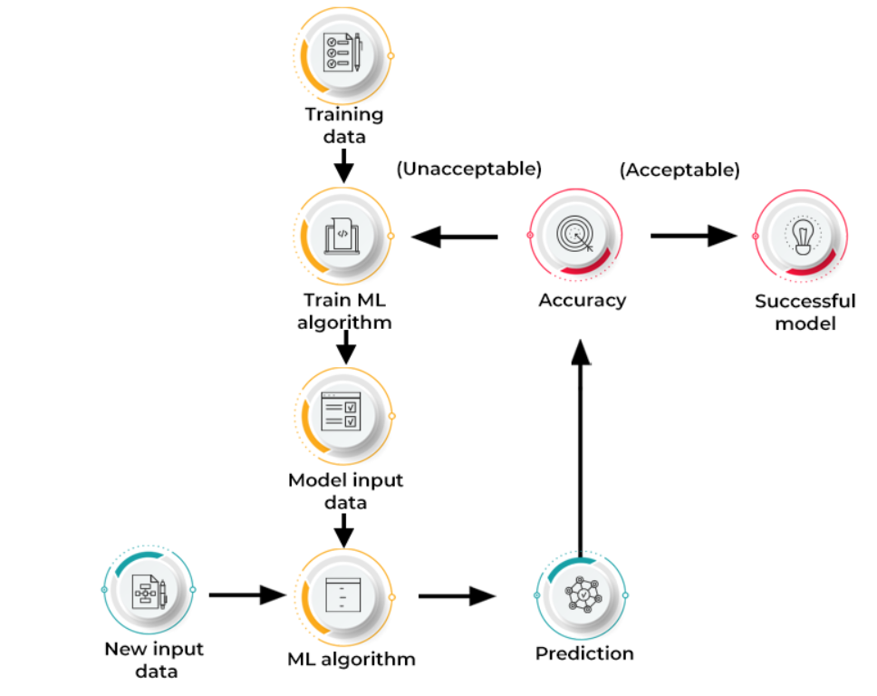
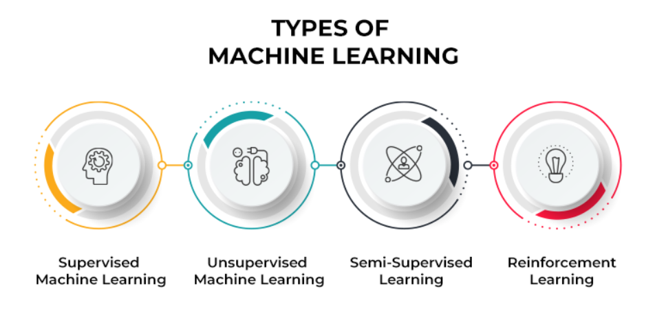

What is Artificial Intelligence(AI)?
Artificial intelligence is the simulation of human intelligence processes by machines, especially computer systems. Specific applications of AI include expert systems, natural language processing, speech recognition and machine vision.
On its own or combined with other technologies (e.g., sensors, geolocation, robotics) AI can perform tasks that would otherwise require human intelligence or intervention. Digital assistants, GPS guidance, autonomous vehicles, and generative AI tools (like Open AI's Chat GPT) are just a few examples of AI in the daily news and our daily lives.
AI is an umbrella term that encompasses a wide variety of technologies, including machine learning, deep learning, and natural language processing (NLP). As a field of computer science, artificial intelligence encompasses (and is often mentioned together with) machine learning and deep learning. These disciplines involve the development of AI algorithms, modeled after the decision-making processes of the human brain, that can ‘learn’ from available data and make increasingly more accurate classifications or predictions over time.
Today, the term “AI” describes a wide range of technologies that power many of the services and goods we use every day – from apps that recommend tv shows to chatbots that provide customer support in real time. But do all of these really constitute artificial intelligence as most of us envision it? And if not, then why do we use the term so often? AI in the workforce
Artificial intelligence is prevalent across many industries. Automating tasks that don't require human intervention saves money and time, and can reduce the risk of human error. Here are a couple of ways AI could be employed in different industries:
1. Finance industry: Digitization of financial services and inclusion of artificial intelligence has truly transformed the industry, making it much more convenient for users to use an app or website to handle their money in a completely safe and private manner.
Artificial intelligence systems for banking have also been curated to flag for potential fraud by analyzing the data of user’s typical spending habits and sending an alert when something seems out of place.
2. Health care industry : AI-powered robotics could support surgeries close to highly delicate organs or tissue to mitigate blood loss or risk of infection. As of today, AI is primarily utilized to increase speed and accuracy in the healthcare realm. Some of the current uses of AI in this field include: Diagnosing Patients: AI algorithms analyze medical imaging data, such as X-rays, MRIs, and CT scans, to assist healthcare professionals in accurate and swift diagnoses.
3. Maps and navigation : Map applications such as those developed by Google and Apple provide you with not only directions, but real-time updates for traffic, public transportation, closed roads, and anything else of which you should be aware.
4. Facial recognition : Facial recognition has completely transformed our phones, allowing us to access any app or unlock our phones without a passcode or fingerprint. Through both detecting that there is a face and then using artificial intelligence technology to recognize your specific facial features, you have a uniquely secure way to access your personal information.This technology has expanded beyond just phones; airports and high-security institutions now use facial recognition to validate your identity quickly and efficiently.
5. Self-driving cars : companies like Tesla are using artificial intelligence to connect to other cars on the road, sense trends, and anticipate and prevent crashes. As this technology becomes more and more advanced, offering even safer alternatives to drivers, we’ll see the number of autonomous vehicles skyrocket.
6. Digital assistants : They will do all such things for you just with a command. You just need to tell them to switch on the fan or play music or turn off the light and they will simply follow your instructions. Amazon’s Alexa and Apple’s Siri are the two best examples of this far-fetched technology. They not only understand our commands but also respond to our queries or questions, make appointments, manage calls, send emails, set alarms, etc. They keep analyzing and learning from interactions in order to deliver improved customer experiences based on our preferences and search history. Types of AI
1. Reactive machines: Reactive machines are the most basic type of artificial intelligence. Machines built in this way don’t possess any knowledge of previous events but instead only “react” to what is before them in a given moment. As a result, they can only perform certain advanced tasks within a very narrow scope, such as playing chess, and are incapable of performing tasks outside of their limited context.
2. Limited memory machines: Machines with limited memory possess a limited understanding of past events. They can interact more with the world around them than reactive machines can. For example, self-driving cars use a form of limited memory to make turns, observe approaching vehicles, and adjust their speed. However, machines with only limited memory cannot form a complete understanding of the world because their recall of past events is limited and only used in a narrow band of time.
3.Theory of mind machines: Machines that possess a “theory of mind” represent an early form of artificial general intelligence. In addition to being able to create representations of the world, machines of this type would also have an understanding of other entities that exist within the world. As of this moment, this reality has still not materialized.
4.Self aware machines: Machines with self-awareness are the theoretically most advanced type of AI and would possess an understanding of the world, others, and itself. This is what most people mean when they talk about achieving AGI. Currently, this is a far-off reality. Pros and Cons of AI
Pros
Cons
Greater accuracy for certain repeatable tasks, such as assembling vehicles or computers.
Job loss due to increased automation.
Decreased operational costs due to greater efficiency of machines.
Potential for bias or discrimination as a result of the data set on which the AI is trained.
Increased personalization within digital services and products.
Possible cybersecurity concerns.
Improved decision-making in certain situations.
Lack of transparency over how decisions are arrived at, resulting in less than optimal solutions.
Ability to quickly generate new content, such as text or images.
Potential to create misinformation, as well as inadvertently violate laws and regulations./
What is Machine Learning (ML) ?
Machine learning (ML) is defined as a discipline of artificial intelligence (AI) that provides machines the ability to automatically learn from data and past experiences to identify patterns and make predictions with minimal human intervention.
Machine learning methods enable computers to operate autonomously without explicit programming. ML applications are fed with new data, and they can independently learn, grow, develop, and adapt. How does machine learning work?

Machine Learning is, undoubtedly, one of the most exciting subsets of Artificial Intelligence. It completes the task of learning from data with specific inputs to the machine. It’s important to understand what makes Machine Learning work and, thus, how it can be used in the future.
The Machine Learning process starts with inputting training data into the selected algorithm. Training data being known or unknown data to develop the final Machine Learning algorithm. The type of training data input does impact the algorithm, and that concept will be covered further momentarily.
New input data is fed into the machine learning algorithm to test whether the algorithm works correctly. The prediction and results are then checked against each other.
If the prediction and results don’t match, the algorithm is re-trained multiple times until the data scientist gets the desired outcome. This enables the machine learning algorithm to continually learn on its own and produce the optimal answer, gradually increasing in accuracy over time. Types of Machine learning:

1.Supervised learning: In supervised learning, we use known or labeled data for the training data. Since the data is known, the learning is, therefore, supervised, i.e., directed into successful execution. The input data goes through the Machine Learning algorithm and is used to train the model. Once the model is trained based on the known data, you can use unknown data into the model and get a new response.In this case, the model tries to figure out whether the data is an apple or another fruit. Once the model has been trained well, it will identify that the data is an apple and give the desired response.
2.Unsupervised learning: In unsupervised learning, the training data is unknown and unlabeled - meaning that no one has looked at the data before. Without the aspect of known data, the input cannot be guided to the algorithm, which is where the unsupervised term originates from. This data is fed to the Machine Learning algorithm and is used to train the model. The trained model tries to search for a pattern and give the desired response. In this case, it is often like the algorithm is trying to break code like the Enigma machine but without the human mind directly involved but rather a machine.
3.Reinforcement learning: Like traditional types of data analysis, here, the algorithm discovers data through a process of trial and error and then decides what action results in higher rewards. Three major components make up reinforcement learning: the agent, the environment, and the actions. The agent is the learner or decision-maker, the environment includes everything that the agent interacts with, and the actions are what the agent does.Reinforcement learning happens when the agent chooses actions that maximize the expected reward over a given time. This is easiest to achieve when the agent is working within a sound policy framework.